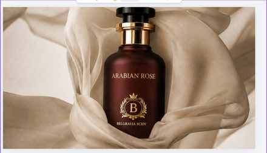
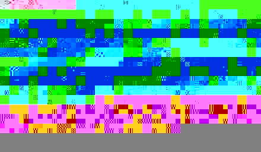
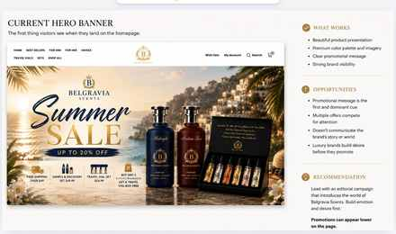

Belgravia had earned the trust. The site hadn't caught up.
Belgravia Scents is a UAE-headquartered fragrance house selling oud and amber-forward eau de parfum to US customers, with a real trust base — 6,800+ reviews — built before I ever saw a brief. Working as Creative Strategist at Proplex, I ran a project-based rebrand: a competitive and positioning audit, a three-phase creative roadmap, a rebuilt photography system, and a US creator strategy — closing the gap between what the brand had earned and what its site and content were actually saying.

Context
Belgravia Scents sells concentrated oud, amber and woody eau de parfum to a US audience, priced from $40 to $96 at the time of the audit (the range now runs to a $99 signature collection alongside a $49.99 discovery set). It's UAE-manufactured, direct-to-consumer, and already carrying more than 6,800 customer reviews — a trust base most challenger fragrance brands don't have yet. What it didn't have was a visual or verbal identity built to match that trust: the brand's pricing and experience sat at the accessible end of the market while its messaging reached for true luxury, sending two different signals to the same customer at once.
The problem
A beautiful brand, an overloaded homepage.
The site's own hero banner told the story before any customer research did: a Summer Sale takeover, four stacked promotions, and the brand's own product photography competing with "up to 20% off" for the same few seconds of attention. The wider homepage read as a catalog rather than a destination — collections stacked back-to-back, a long promotion-heavy scroll, and, per the audit, no clear focal point or guided journey. The opportunity wasn't more content. It was less of it, in a different order.


What I did, in order
Six decisions, each building on the last — not one creative reveal.
-
1
Diagnose before designing
Before any creative direction, I ran a competitive and positioning audit — pricing, review counts and messaging against direct competitors (Lattafa, Armaf, Ajmal, Rasasi, Swiss Arabian — Belgravia's closest "voice-twin" — and Al Haramain) and indirect ones (Phlur, Skylar, Dossier, Jo Malone, Maison Margiela Replica). The finding that shaped everything after it: luxury brands earn trust through proof — named perfumers, documented heritage, real retail placement — not through adjectives, and Belgravia's own positioning was still leaning on adjectives.

The competitive read that set the direction for everything after it. -
2
Name the gap in writing, not just in a deck
The brand-understanding work made the gap explicit: pricing and experience sat near "accessible," messaging reached for "true luxury" — and named what the brand already had to close it with instead of borrowed heritage language: the review base, occasion-led collections (Date Night, Vacation Energy) that were under-realized visually, and a clear oud-rooted identity rather than an unfocused range.

Naming the gap between where pricing sat and where messaging reached. -
3
Sequence the rebuild instead of redesigning everything at once
I structured the work as three phases rather than one relaunch: Foundation (website and brand audit, identity, brand proof), Elevate (photography, packaging, videography, UGC and influencers), and Engage (content strategy, social, email/CRM, customer experience) — each phase building proof for the next, rather than shipping a new look with nothing behind it.

The three-phase roadmap: foundation, then experience, then engagement. -
4
Replace promotion-first with emotion-first
I recommended leading the homepage with an editorial campaign rather than the sale banner, and pushing promotions further down the page — the same move Maison Francis Kurkdjian, Byredo, Amouage and Aesop all make on their own hero banners, and the one Belgravia's audit showed it wasn't making yet.
-
5
Build a repeatable photography system, not one-off shots
Rather than brief a single hero shot, I set a six-part system — hero product, detail, craftsmanship, lifestyle, texture and material, mood and ambience — tied to the fragrances' own ingredient story (pineapple, smoky woods, amber, black pepper, vanilla, musk), so future content stays consistent without a new brief every time.

The six-part photography system, tied to each fragrance's ingredient story. -
6
Model the creator strategy on economics, not on one big name
For the engage phase, I built a separate US creator and UGC strategy rather than recommend a single macro-influencer campaign: heavy gifting to nano and micro fragrance creators, a small number of paid placements, and one or two macro names reserved for credibility rather than reach — modeled on how Kayali actually grew, through prolific mid- and lower-follower "fragrance fanatics" each generating six-figure earned media value, not one campaign.
What was mine
This is one project inside an ongoing seat — I work at Proplex as Creative Strategist across whichever client brief the agency is running, and Belgravia Scents is the one project from that seat client confidentiality allows me to show in this much detail. My scope here was strategy and direction: the competitive and positioning research, the three-phase roadmap, the structure of the photography system, and the US creator/UGC economics strategy. The website build, individual shoot production and day-to-day execution of the roadmap sat with Proplex's wider production team, not with me alone.
What's live
The engagement is project-based and ongoing — so what follows is what shipped, not a finished performance read.
-

The rebuilt homepage — campaign photography first, the promotion pushed down the page. -

Collections reorganized around how customers actually shop. -

Product photography from the new system, in production use. -

The ingredient-story system, applied to navigation. -

Belgravia's Instagram today — active creator content from the engage phase.
What I'd watch next
The immediate test, once the engagement closes, is whether the editorial-first homepage and the ingredient-led photography actually move the needle on the same proof-not-promises gap the audit diagnosed — and whether the nano/micro creator model, still new for this brand, produces anything like the earned-media performance it's modeled on.
The harder discipline is the one the audit forced on me before anything else: a brand's case for luxury only holds if it's built from what's actually true about it — the reviews, the ingredient story, the occasion-led thinking already there — rather than heritage language it hasn't earned yet.